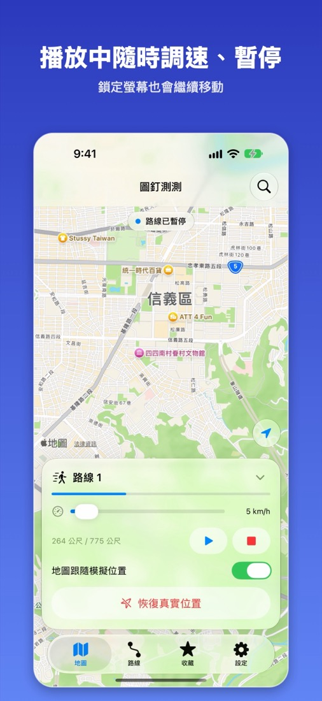

圖釘測測
開發測試用的定位模擬工具

這是什麼
圖釘測測是給 App 開發者與測試人員使用的定位模擬工具。它直接在你的 iPhone 上模擬系統定位，不需要連接電腦，方便在真機上測試與位置有關的功能。
主要功能
- 地圖選點：點一下地圖，或搜尋地址、地點名稱，把模擬位置傳送到那裡。
- 路線播放：排出路線，以步行、跑步、單車或開車的速度沿道路移動，播放中可以調整速度。
- 匯入路線：貼上 Google 地圖或 Apple 地圖的導航分享連結，轉成可以播放的路線。
- 收藏：把常用的測試地點存起來。
- 一鍵恢復：隨時回到真實位置。
- 支援 iPhone Duo 展開螢幕的左右並排版面。
使用前須知
- 需要開啟 iPhone 的「開發者模式」並完成一次配對設定，App 內有逐步引導。
- 模擬位置會影響整台 iPhone 上的所有 App。需要報案、求救、叫車或導航時，請先恢復真實位置。
- 本 App 僅供開發與測試用途，請遵守各 App 與服務的使用規定。